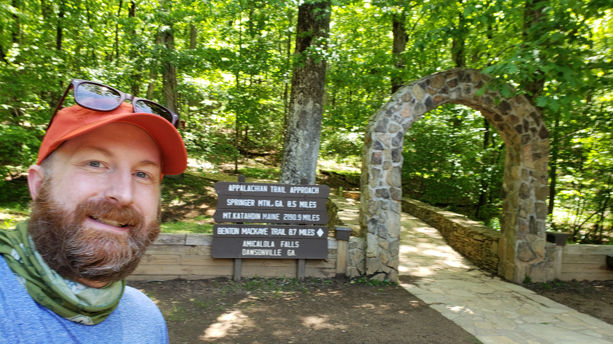

Georgia is the southermonst state on the AT. It follows a 76 mile path through the state. The trail starts at the summit of Springer Mountain in Amicalola Falls State Park.
I hiked the Georgia section in 2021 on my three-week "LASH" adventure
Here are some pictures from my trip:
